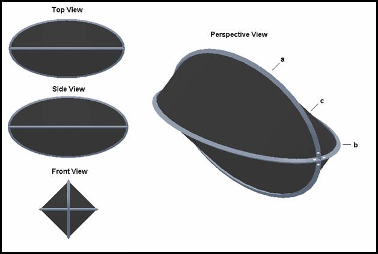
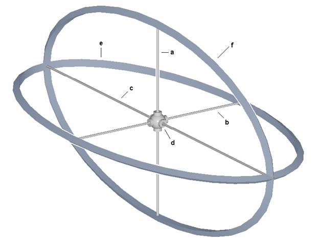
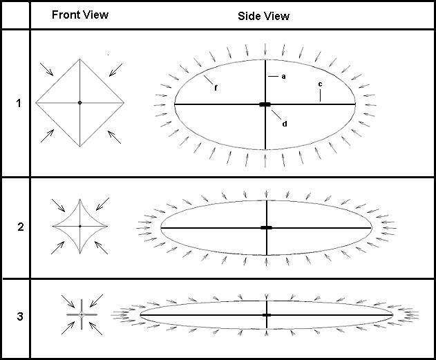
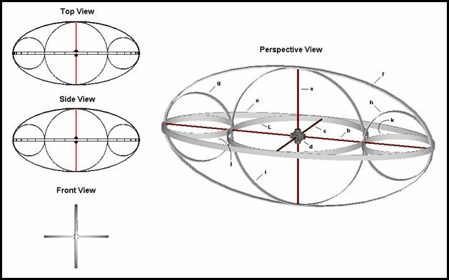
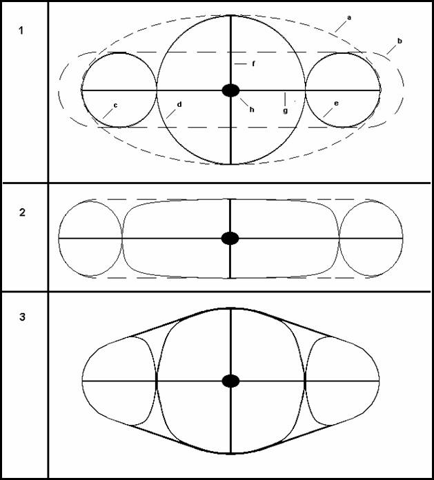

Contents
TITLE OF INVENTION
VARIABLE VOLUME VACUSTAT
PROVIDES HULL, LIFT, AND BOUYANCY CONTROL FOR AIRSHIPS
PROVIDES HULL, PROPULSION AND BOUYANCY CONTROL FOR SUBMERSIBLE VEHICLES
Inventor: John R Shearing 732 406 6934 johnshearing@gmail.com
This Invention Is Freely Given To All People

Figure 1: Renderings of the vacustat exterior.

Figure 2: Vacustat shown without fabric.

Figure 3: How small changes in major and minor diameters effect large changes in volume.

Figure 4: Preferred embodiment, which increases strength and reduces weight.

Shows the behavior of the bow supports and explains how it is possible to place the outside of the vacuum vessel entirely in tension.
BACKGROUND OF THE INVENTION
0001 This application claims benefit of priority under 35 USC 120 to application “Spherical Enclosure Suitable As A Building Structure, Pressure Vessel, Vacuum Vessel, Or For Storing Liquids” filed on 01/15/2003 and assigned U.S. PTO application number 10/342767. Also seen here at 10/383444, and seen here on this page as well
0002 This application claims benefit of priority under 35 USC 120 to application “Light Weight Cylindrical Vacuum Vessel” filed on 02/02/04 and assigned U.S. PTO application number 11/049576
0003 This application claims benefit of priority to provisional patent application of the same title filed on 10/08/2004 and assigned U.S. PTO application number 60/617403.
0009 This document defines methods that will facilitate the production of variable volume vacuum bottles that are lighter than the air they displace, while being strong enough to stand up to atmospheric pressure. The bottles provide lift without the need for lifting gas such as helium, provide for buoyancy control without the need for ballast, and take advantage of the new super strong lightweight building materials (which exhibit their strength in tension only) by placing the outside of the bottles in tension rather than compression (as is the case with all other vacuum vessels).
0010 From here on, vacuum vessels used for the purpose of creating lift shall be referred to as vacustats. The discipline of engineering and designing vacustats shall from here on be referred to as “Vacuum Aerostatics”. And the endeavor of creating aircraft that use vacustats will from here on be referred to as Vacuum Aeronautics.
0011 This document will also define a method of constructing buoyancy driven submersible vehicles that will go deeper, run quieter, and use less fuel than currently existing buoyancy driven submersibles. And because a vessel of this type is small and therefore relatively easy to construct, the lessons learned can be applied to the construction of much larger buoyancy driven aircraft which are prohibitively expensive to experiment with.
DESCRIPTION OF PRIOR ART
0012 All previously existing airships receive lift by virtue of helium or some other lighter than air gas. With these ships buoyancy control has always been an issue because no one wants to dump expensive helium. So landing these craft requires forward motion and a large ground crew. This work is dangerous and many lives have been lost during docking operations. This patent application discloses an airship that uses a renewable vacuum instead of precious helium as the lifting medium. This allows for easy buoyancy control as well as for vertical takeoffs and landings without the need for ground crew or for runways.
0013 In US patent number (4,113,206), David Wheeler describes a geodesic structure that is lighter than the air it displaces. The intent is to evacuate the air from inside the structure so that the structure will float in the atmosphere. But even with today’s super strong and super light composite materials, a working model has never been built. I would compare Wheelers structure or any geodesic dome to an eggshell. I say this because, like an eggshell, there are no internal supports in a geodesic dome. And so like the eggshell, the material comprising the geodesic dome handles both compression and tension. We all have knowledge of an egg’s properties. The egg can stand up to very high external pressure as long as the pressure is very uniform on the surface of the egg. But just touch the egg against the side of a bowl and the egg will break. Eggs and geodesic structures are weak in this way because the structure is a compromise between good tension strength and good compression strength. And this compromise carries with it the property of brittleness. Toughness and flexibility are very important in rigid airship design because wind shear and impact are very common modes of failure and disaster. The construction techniques used in this invention ensure that members are either in tension or compression, but not both. This has three major advantages: First, because the tension and compression members are separate and distinct, you can create some distance between them. This gives great toughness and flexibility. A suspension bridge is a good example of this. Second, you can optimize rather than compromise the members for either tension or compression strength. This results in members of much less weight for the same strength. And third, all of the new super strong, super lightweight, and super expensive materials exhibit their strength in tension only. So having separate and distinct tension and compression members allows the designer to build the compression members from less expensive materials. When a typical vacuum vessel is under the load of atmospheric pressure, the entire surface of the structure is in compression. But as mentioned before, today’s super strong materials exhibit their strength in tension not compression. This invention demonstrates a way to place the outside of the vacuum vessel in tension rather than compression. This allows us to take maximum advantage of the strength that today’s materials can offer. And this in turn allows us to build a much lighter vacuum vessel for the same displacement.
0014 On 01/15/03 I filed a patent application numbered 10/342767 entitled Spherical Enclosure Suitable As a Building Structure, Pressure Vessel, Vacuum Vessel, Or Storage Tank. This patent application describes a spherical vacuum vessel, which is supported internally by struts. The application is now in the public domain.
0015 On 03/07/03 I filed a patent application numbered here at 10/383444 also entitled Spherical Enclosure Suitable As a Building Structure, Pressure Vessel, Vacuum Vessel, Or Storage Tank. But this patent application describes a spherical vessel that is supported externally by masts that extend radially from the center of the sphere to some distance above the surface of the sphere and are spaced equidistantly about the sphere. Cables extend from the tops of the masts to surface of the sphere to support it when evacuated.
0016 Using the techniques outlined in these two patent applications it is possible to create a sphere that will float in the atmosphere by evacuating the air from within. The advantage of this method is the spherical shape of the vessel, which is the most efficient way to enclose a volume in terms of surface area. In other words, the spherical shape allows the builder to enclose the greatest amount of space for the least amount of building materials. So theoretically, this structure gives the greatest amount of lift for a given amount of building materials than any other possible structure. The problem with these structures is that a sphere is not very aerodynamic, so this is a very good way to make an aerostat, but a very poor way to make an airship.
0017 On 02/02/05 I filed a provisional patent applications numbered 11/049576, 60/617403 and 60/541292 entitled Light Weight Cylindrical Vacuum Vessel Provides Lift for Airships. At the time of this writing, the application is in pending status. This patent application addresses the issue of aerodynamics, but at the expense of lift. This is because a cylinder requires more building materials to enclose a given volume that does a sphere. Still, given a big enough in diameter, it is possible to build this structure so as to float when evacuated of air. This structure has another drawback as follows. The structure has a central column or backbone that receives all the stresses applied to the surface of the structure by atmospheric pressure. So this creates the difficult challenge of making a backbone strong enough to resist these stresses while also being light enough to facilitate flight. And while it is true that, making a vacuum vessel of sufficient diameter can solve this problem, it would be advantageous to have a design that requires no central column. This invention discloses a method of making a vacuum vessel with a better aerodynamic shape that requires no central column.
0018 The prior art discussed so far controls buoyancy by pumping air in or out of vacuum vessels of a fixed volume. This is sure to be a slow process, and vacuum pumps are heavy, adding significant weight to the craft. But if vacuum were the constant and the volume of the vessel was the variable then we could eliminate the need for lifting gas and vacuum pumps. Instead, lift would be generated by mechanically altering the volume of the vessel. To imagine how this might occur, think of these vacuum vessels as very large, super strong, airtight envelopes. Perhaps these envelopes might be made of the same material used to make the sails of a racing yacht. Often Kevlar, graphite, carbon, or fiberglass is chosen for this purpose. The envelopes can be forced open to displace air and create lift in much same way you would hoist a sail up the mast of one of these yachts. In fact, the expertise for building the first vacuum lift airships will most likely come from the racing yacht industry and not from aircraft manufacturers or blimp manufactures as you might expect. But if you think about it, propulsion of a racing yacht is accomplished by exposing one side of the sails to enormous air pressure while the other side of the fabric is exposed to enormous vacuum pressure. These are the exact same conditions we will be placing on the fabric of our vacuum lifting vessels. Looking again at my previous patent application 10/383444, it is easy to see it’s similarity to the rigging of a sailing ship. But the airship I am about to explain is different from any previous patent, because this patent application teaches a method of supporting an airship envelope with a flexible skeleton capable of being bowed into different shapes for the purpose of changing the volume of the envelope, which in turn creates or dumps lift. This is the main difference between this airship envelope and any prior art.
0019 As mentioned before, all of the prior art discussed so far, are vacuum vessels of a fixed volume. But a weather balloon gets bigger as it climbs higher in to the atmosphere. This is because the air gets thinner as you climb higher. Thinner air exerts less pressure on the balloon, so it expands. But the thinner air at high altitude weighs less than the dense air below, and the balloon can only rise if it weighs less than the air it displaces. So if the air gets thinner, then the balloon must increase in volume if it is to continue to rise. This is exactly what happens to a weather balloon as it rises and this explains why these balloons can practically reach outer space. But the prior art discussed so far has a fixed size. This requires the pilot to make constant adjustments to the amount of gas in the vessels in order to effect altitude changes or to adjust for changes in barometric pressure. The airship envelope disclosed in this patent application has a flexible skeleton so its size increases in response to lower air pressure and decreases in size in response to higher air pressure. This effectively makes the craft neutrally buoyant at any altitude. Also, this craft is unaffected by changes in barometric pressure.
0020 All known submarines have exteriors that are exposed to and handle compression forces only. But the new high strength composite materials exhibit their strength in tension only. So it stands to reason that if a submarine can be made such that the entire force of water pressure exerted on the surface of the submarine causes tension on the skin of the submarine, then they can be built stronger and with less material which will translate into submarines that are less expensive and can go deeper. This invention discloses a method of making such a submarine.
0021 Already known in the art and deployed in the oceans are buoyancy driven submersible vehicles. These vehicles are able to change their buoyancy by actually changing their volume. This causes the crafts to either sink or rise in the water as desired. By use of hydrofoils this vertical motion is converted to horizontal motion and thus propels the craft. These vehicles use almost no fuel. This is not science fiction. This is current technology. Search the Internet on the key words “Buoyancy Driven” to find out more. This invention discloses a method of making simpler stronger cheaper and most importantly, quieter buoyancy driven submersible vehicles. But the biggest advantage of building a buoyancy driven craft as outlined here, is that its construction will serve as a working scale model of a buoyancy driven vacustat that can be used as a stepping-stone towards achieving the more difficult task of building vacustats and buoyancy driven aircraft.
BRIEF SUMMARY OF THE INVENTION
0022 The purpose of this invention is to:
- Provide a method for creating a novel vacuum vessel that has the properties of being lighter than the air it displaces yet being strong enough to stand up to atmospheric pressure. This vacuum vessel will float when evacuated of air. As such, this vacuum vessel will find enormous use in the airship industry, which is now dependent on helium to provide lift. Although no such vehicle currently exists, (D.A.R.P.A.), the science arm of the United States military has solicited for proposals and designs for such a craft, of which this is one.
- Provide a new method for creating a vacuum container that has a more aerodynamic shape than my previous patent application, numbered 60/541292, provided for, and yet requires no central backbone as was required in the design of this same previously mentioned patent application.
- Provide a new method for creating a vacuum container capable of expanding or contracting in response to changes in barometric pressure, thereby making it neutrally buoyant at any altitude and at any barometric pressure.
- Provide a new method for creating a vacuum container capable of quickly changing it’s volume to provide lift for vertical takeoffs or to dump lift for vertical landings and so as not to lift off during unloading of cargo.
- Provide a new method of for creating buoyancy driven submersible vehicles that are stronger cheaper and quieter than anything currently available.
BRIEF DESCRIPTION OF THE DRAWINGS
0023 Figure 1 shows the three orthographic projections and a perspective view of the outside of the invention in one of its embodiments.
0024 Figure 2 shows a perspective view of the invention in the same embodiment shown in figure 1, but with the envelope fabric removed.
0025 Figure 3 shows what happens to the volume of the vacuum vessel as its dimensions change. The important thing to notice here is the enormous change in volume for relatively small changes in the major and minor diameters of the vacuum vessel.
0026 Figure 4 shows the invention in a second and more preferred embodiment, which increases strength and reduces weight by placing the entire exterior of the vacuum vessel in tension rather than compression, as is the case with all other vacuum vessels.
0027 Figure 5 shows the behavior of the bow supports and explains how it is possible to place the outside of the vacuum vessel entirely in tension.
DETAILED DESCRIPTION OF THE INVENTION
0031 Figure 1 shows the three orthographic projections and a perspective view of the outside of the invention in one of its preferred embodiments. In this embodiment, there are no internal supports. Items (a) and (b) are flexible ribs in the approximate shape of an ellipse, which intersect at a 90-degree angle on their common major axis. In this preferred embodiment, the major diameter of items (a) and (b) are twice the minor diameter. The material of these ribs can be a composite similar in construction to the fiberglass recurve bow used by archers. Or perhaps spring steel like that used in the leaf springs of cars might be a better material. When I was researching the idea for this patent I made a model out of spring steel because it was available. But however these elliptical springs are made, they must be very strong, very stiff, and very light. Yet given enough force, the springs must be able to bend such that the major diameter may increase by a third or more and the minor diameter may decrease by one half or more. See Figure 3 to get an idea of how these springs will be bent under load. The reason for bending the springs is to change the volume of vessel in order to increase or decrease lift.
0032 Looking at the front view in Figure 1 you will notice that the vacuum vessel has a square cross-section. I could have chosen to use three bowed supports to give the vessel a triangular cross-section or I could have used five bowed supports to form a pentagonal cross-section. But after doing some math, I discovered that a square cross-section gives the greatest amount of volume for the least amount of supports. So for generating lift, this is the most efficient cross-section possible.
The math is as follows:
Let (A) = the area of an equilateral polygon, inscribed within a circle having a diameter of 1
Let (N) = the number of vertexes the polygon has
Let (V) = the area supported by each vertex of the polygon
For any polygon A / N = V
For the triangle, .325 / 3 = .108
For the square, .5 / 4 = .125
For the pentagon .595 / 5 = .119
For the hexagon .649 / 7 = .108
As you can see from the table, the square gives the maximum value indicating the most efficient cross-section with the pentagon following close behind.
0033 Item (c) is a fabric made from some super strong material such as Kevlar, graphite, carbon, or fiberglass. As mentioned before, it would be wise to consult people who make sails for racing yachts, for a material specification and also to purchase the finished material made to size. This fabric is in four sections; One for each quadrant formed by the arrangement of the two elliptical springs. The fabric is stretched out and clamped along the edges of the elliptical springs in such a way as to form an airtight seal
.
0034 Please notice the 4 white dots where items (a) and (b) intersect in the perspective view. These dots represent windows, which are included in the drawing to give the reader an idea of the size of the craft and to convey the idea that the elliptical springs (a) and (b) may be hollow to permit storage for cargo, areas for passengers and crew as well as a conduit for moving about the craft. Because the fabric is attached to the edges of the springs, it will not interfere with airlocks in the elliptical springs that lead to the inside of the envelope. But since this is a vacuum vessel, during flight, entry to the inside of the envelope will require a pressure suit. In general, it might be unwise to store cargo inside the envelope because, since there is no air in a vacuum vessel, you would loose the small amount of lift that all things have in our atmosphere by virtue of the fact that they take up space. Still, if having an aerodynamic contour is of paramount importance, then perhaps it would better to keep cargo and passengers inside the envelope in pressurized areas.
0035 At first thought, it might seem that placing the elliptical spring supports (a) and (b) outside the envelope as shown in figure 1 would give the most buoyancy, because as explained before, if you covered these supports inside the envelope you would lose the lift they have by virtue of the fact that they take up space. But looking closer at figure 1, you can see that if you allowed the envelope to completely cover the elliptical spring supports, then the volume of the envelope would be much greater. This difference in envelope volume would be greater then the volume of the elliptical spring supports, so now it would seem that covering the supports with the envelope is a good idea. But there are other considerations as follows.
0036 As the pilot changes the volume of this vessel to either create or dump lift, one of the most important considerations is that the envelope fabric must not slide across the elliptical support members that keep it open. This is because the friction created would harm the envelope fabric and hinder the motion of the support members. But the support members move a great deal in the act of creating and dumping lift. And unlike a child’s balloon, the envelope fabric will not stretch. We can say the length of the fabric is constant even though it’s shape changes. The lengths of the support members are also constant. So in order to prevent relative motion of the support members with respect to the fabric, it will be necessary to change the shape of the support members to match that of the fabric. When a member is bent, one side of the member along the length of the bend is stretched, and the other side is compressed. There is also a line along the length of the bend where neither stretching nor compression occurs. This line is referred to as the centerline of the bend. The envelope fabric must be attached along this centerline to prevent any stretching of the fabric as the craft is operated. So now it seems like part of the elliptical spring support will be covered by the envelope fabric and part of it will be exposed as the fabric is attached about the bending centerline. I think that this is the best approach if the fabric unable to stretch. But if envelope fabric is able to stretch along with the outside of the elliptical spring support, then it would be advantageous to cover the entire support with the envelope.
0037 Figure 2 shows a perspective view of the invention in the same preferred embodiment shown in Figure 1, but with the envelope fabric removed. Please notice cables (a) (b) and (c) and winch housing (d). These parts are used to bow the elliptical supports (e) and (f) for the purpose of changing the volume of the envelope.
0038 Figure 3 shows what happens to the volume of the vacuum vessel as its dimensions change. Lets assume that the elliptical spring supports have a curvature shown in row (1). In this unstressed state, the envelope is held open. In order to make the craft float, we need to initially evacuate the air from inside the envelope. This is accomplished by tensioning cable (a) and slackening the cable (c) using the machinery in winch housing (d). This causes the envelope to go slack as shown in row (3). Now the envelope can be evacuated using a very small vacuum pump. The arrows surrounding the vacuum vessel demonstrate that atmospheric pressure forces any slack in the envelope in towards the center of the structure. This helps to balance the load on elliptical support spring (f) and keeps it from buckling. From this point on, the envelope will remain evacuated, even when forced fully open. The envelope can be forced fully open to create lift by giving slack to cable (a), and tensioning cable (c). This causes the major diameter of the elliptical support spring (f) to decrease and the minor diameter to increase as shown again in row (1). The important thing to notice here is the enormous change in volume for relatively small changes in the major and minor diameters of the vacuum vessel.
0039 Figure 4 shows the invention in a second and more preferred embodiment where the entire exterior of the vacuum vessel can be placed in tension. Before discussing Figure 4 we will need to define some terms. For our purposes, a curve will be defined as an arrangement of continuous points in a plane. A closed curve will be defined as a curve whose starting point is the same as its ending point. A simple closed curve will be defined as a curve that does not intersect itself. A simple closed curve will be considered convex if every line segment drawn between any two points inside the curve lies entirely inside the curve. Now we can discuss Figure 4. Items (a), (b), and (c) are cables used to change the volume of the vacustat. Item (d) is the winch which acts upon the cables. Outer supports (e) and (f) are approximately elliptical in shape in this embodiment but a multitude of other shapes may serve better. It is not my intent to limit the shape of the outer supports to that of the ellipse but rather to use the ellipse as a starting point for demonstrating the construction of a vacustat. If a limiting definition for the shape of the outer supports (e) and (f) must be given, then the limiting shape shall be defined as a simple closed convex curve which is symmetrical about a major diameter. Outer supports (e) and (f) form the lines of attachment for the fabric, (not shown) which shall be attached in an airtight manner so as to enclose the space approximately defined by the revolution of (e) and (f) about their common major diameter. In this embodiment, outer supports (e) and (f) must be designed to handle a large tension load along their perimeters but compressive stress will be relatively low. In this embodiment bow supports (g) (h) (i) (j) (k) and (l) are circular, but a multitude of other shapes may serve better. It is not my intent to limit the shape of the bow supports to that of the circle but rather to use the circle as a starting point for demonstrating the construction of a vacustat. If a limiting definition for the shape of the bow supports (g) (h) (i) (j) (k) and (l) must be given, then the limiting shape shall be defined as a simple closed curve. Outer supports (e) and (f) would have to be enormously strong in compression if not supported at the major and minor diameters, because this is where they would most likely fail under atmospheric pressure. The bow supports (g) (h) (i) (j) (k) and (l) reduce the need for strength at these points and therefore reduce the weight of the outer supports (e) and (f). But the bow supports add weight of their own to the structure so you may be asking yourself, “Why use them?” The reason is that by using the bow supports (g) (h) (i) (j) (k) and (l), the elliptical supports (e) and (f) are no longer required to handle compression, but rather tension only. This allows the designer to optimize rather than compromise these outer supports for lightweight and strength in tension. And since the bow supports are handling compression only, these parts can also be optimized for lightweight and strength in compression. And so the total weight of all these parts when used together will be much less than the total weight of the outer supports alone were they not supported by the bow supports. This will be demonstrated in the next drawing.
0040 Figure 5 shows the behavior of the bow supports. The picture in row (1) shows the structure unstressed. Item (a) represents an outer support. Item (b) represents an oblong with the same perimeter length as item (a). Items (c) (d) and (e) are bow supports. Items (f) and (g) are cables used to deform the structure for the purpose of increasing or decreasing volume and item (h) is the winch which tensions the cables. The picture in row (2) shows what happens when cable (f) is tensioned and cable (g) is given slack. Even though outer support (a) is highly tensioned, at this point the air is easily removed from the vessel because the envelope is slack. Please notice here how the bow supports (c) (d) and (e) deform to fill in along the perimeter of the outer support (a) which has taken shape (b). Since the bow supports deform along the perimeter of outer support (a), you can build the outer support and the bow supports lighter because they do not need to handle point loads as in more common construction when tension and compression members are joined. The picture in row 3 shows what happens when the evacuated envelope is forced open by giving slack to cable (f) and tensioning cable (g). It will require an enormous force on cable (g) to open the envelope because atmospheric pressure will be acting on the envelope, which will try to force the outer support (a) into the shape shown by item (b). But remember that when we evacuated the air from the envelope, we compressed the bow supports (c) (d) and (e). This stored energy will now be used to help open the envelope making the task easier for cable (g) and the winch. The most important thing to notice here is that the outer support is completely in tension. This means that instead of having to build elliptical support (a) like the leaf spring of a car, (a heavy structure), a simple lightweight Kevlar cable would do.
0041 Because there is elasticity in the supports, the structure will self adjust, (within limits), for neutral buoyancy as atmospheric pressure changes. But the most important thing about having a flexible support structure is that the airship is well suited to handling impact and wind shear, which are by far the most common modes of rigid airship failure.
0042 The only thing that occurs to me to improve the craft is to find a way to place the winches near the bottom of the craft so as to act as ballast in helping the craft maintain the correct orientation with respect to gravity.
DISCUSSION
0044 After reading about this invention, some of you may be wondering, “If this is such a good idea, why hasn’t this occurred to others, and why hasn’t at least a working model of a vacuum airship been built?”
The idea that an airship can be made to float by use of vacuum is actually an old idea. But atmospheric pressure is so immense that not many have given the idea serious thought. To understand how daunting the task, you can repeat an old experiment where a small amount of water is boiled inside a gallon olive oil can with a screw type cap. After the water boils, the cap is placed on the can and screwed tight. Now quickly, before steam pressure ruptures the can, cool it by running the can under cold water from the tap. As the can cools, the steam condenses into water and so there is nothing to support the can from the inside. So the can collapses to a tiny fraction of its original size under atmospheric pressure. With the advent of new super strong, super lightweight composite materials, the vacustat idea has been given a little more consideration, but still, there have been few serious proposals despite solicitations from (D.A.R.P.A.) and no working vacuum airships have yet been created. One reason no working vacuum airships have yet been built is that the solutions to the engineering problems concerning vacustat construction are unintuitive and outside the scope of common engineering knowledge. Conventional structures take advantage of a material’s compressive strength but today’s new super strong materials are strong in tension not compression. This invention defines a structure that stands against atmospheric pressure in tension rather than compression and so takes advantage of the strength of today’s new super strong materials. In general, engineers are good at building rigid structures and are conditioned to think that way. A case and point is that large dirigibles are classified as rigid airships, when rigidity is not a desirable quality for an airship. That’s because wind shear and impact are the most common causes of airship disaster and a flexible airframe would greatly improve survivability during these events. This invention has more in common with archery bows and racing yachts than it does with any currently engineered airframe. But you can’t call on the sporting goods industry to build the required supports, because they have never built bows anywhere near the sizes required by this project and sail makers cannot be called upon to make the envelope for the same reason.
CLAIMS
I claim:
1. A submersible or vacustat comprised of any number of outer supports made of strong flexible elastic material configured as convex curves, positioned and joined at two points, (upon common diameters when the curves are closed or at the end points when the curves are open), to form an equiangular array whereupon strong airtight fabric is fastened so as to enclose space wherein any number of tensioning devices are fastened for the purpose of changing and maintaining the shape and volume of the vessel.
2. A submersible or vacustat according to claim 1 wherein any number of supports made of strong flexible elastic material whose shapes are defined by any closed convex curve are placed tangent to said outer supports and used to carry the compression loads of said outer supports such that the outer supports sustain tension loads only.
ABSTRACT
A container lighter than the air it displaces yet strong enough to stand against atmospheric pressure. This container, from here on referred to as a vacustat will float when evacuated of air. One intended use of this vacustat is to provide lift for vacuum airships. The other intended use is to provide a new type of hull for silent running buoyancy driven submarines, which will serve as a stepping-stone toward the development of buoyancy driven vacuum airship.